Introduction
This is a comprehensive guide on how to succsessfully run the Large Oil Rig monument in the game 'Rust.' Oil Rig and Large oil rig are two end game monuments. This means that it is quite dangerous and generally considered high risk high reward.
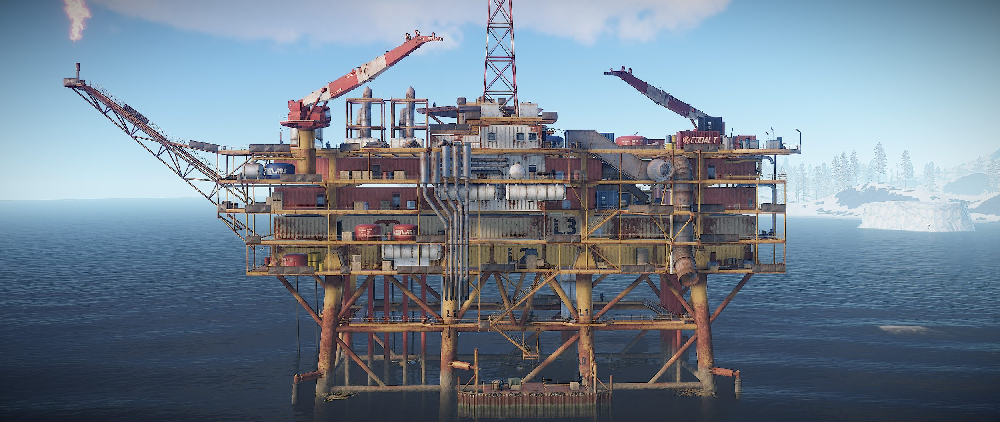Cards & Progression
Considering the fact that the oil rig monuments are an end game monument, there are steps that need to be taken before even considering running it.
Cards
The Oil Rigs are both considered "Red Card Monuments", which means that they require a red card. Almost Every monument in rust requires a card. These incude green, blue and red cards, which increase in difficulty accordingly. You will first have to aquire green card from a gas station or supermarket, then you will have to use that green card at a green card monument to aquire a blue card. Similarly, you will then have to use the blue card at a blue card monument to aquire a red card. Oil rig has loot rooms for green, blue, and red cards! However most people only use it for it's red card loot. Once the red card is required, you are ready for Oil!
Alternativly, you can also adapt other strategies. The most common of these are:
- Directly Buying a blue card at Outpost.
- Killing another player who has already aquired their cards.
- Running Oil Rig, then camping it waiting for a player to show up with their cards.
Progression
Another facet to consider, is that of your own progression in the game. You must be at a point in your gameplay that you have the technology to aquire guns. You will need at least tier 2 guns, medical syringes, and road sign armor.
It should be noted that very expirienced players can complete oil rig with only bows, crossbows, bandages, and little clothing. However it should be noted that this strategy not only relies heavily on their skill, but it also relies on luck because this stretegy depends on the player finding a gun on the monument.
Getting There
One important complication to consider, is the location of the oil rigs.
The Oil Rigs always spawn on the edge of the map, far out into the ocean.
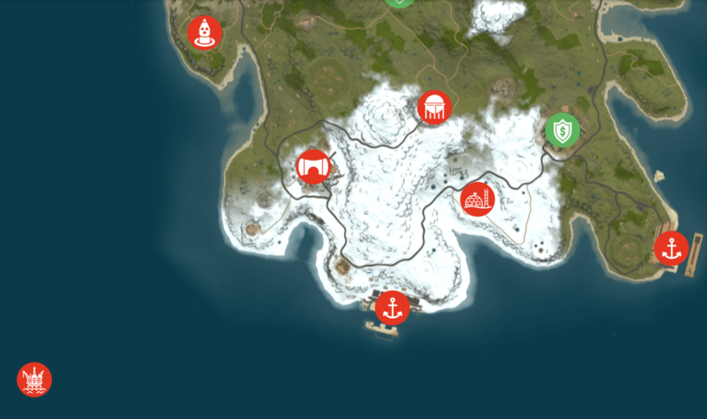The image above displays part of the rust map and shows how far off shore the oil rig monument is generated.
Transportation
The oil rigs' inconvenient location means that we need a form of transportation to get there in the first place. The two most common forms of transportation are by boat or by helicopter:
- Boats can be purchased at a fishing village at the shore. They can be use to board the Oil Rig from the dock at the bottom.
- Helicopters can be purchased at bandit camp. They can be used to board the oil rig from the helipad on the top of the rig.
Boarding the Rig
If you are tackling large oil rig with a boat, you should approach from the dock side of oil-rig and eliminate the scientists on each level going up to the top.
Level By Level Walkthrough
L0
L0 — also called the Dock — is the start of most oil rig assaults. The 2 scientists patrolling this level will have to be dealt with. The easiest way to accomplish this is to snipe them from outside of their range. If you are bolder and working with a team, though, you can rush the bottom and kill them up close. You can also run them over with a boat going faster enough, and are able to swim under the Dock without drowning and hit the scientists from below, through the floor. Either way, once you are on the dock, you should use the two boxes as cover from the scientists on L1. There is also a Crate on this level that you can collect.
L1
L1 is a ring of catwalk platforms, with a walkable pipe running through the middle and two sets of stairs leading up to L2. This level has around 4 scientists, and the lack of cover on this level can make it difficult to clear. For this reason, it is often best to snipe whoever you can before boarding the Oil Rig (at the same time you would snipe L0’s). For those that it is not possible to snipe, using the boxes on the dock as cover and shooting the scientists from below is your best option. If all else fails, you can stand directly under the ladder, where they cannot fire at you, though this method is tricky and dangerous compared to the other methods.
L2
After Clearing L1, you can proceed up either set of stairs to L2. The handful of scientists here should be easy to kill as long as you take your time and use your cover, picking them off once at a time without getting greedy. Once the scientists on this level are dead, be sure to loot the two or three available Crates. From this level, you can look down onto the dock, in case you need to repel any other attackers. To do this, you can jump on the Food Crate on the side of the Heli-Pad (#1 on the map below). You can also use the Oil Rig's supports to get a vantage down.
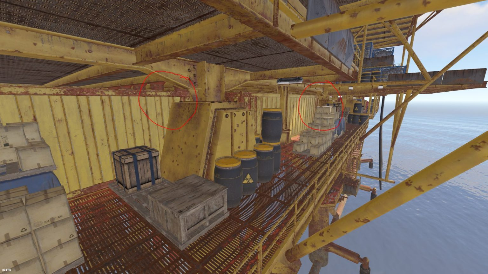L3
L3 is where the difficulty ramps up. You will come up just to the right of the Green Card. Most of the scientists on level roam here, so you should proceed with the same caution you took when clearing L2. The stairs you came up can be made into a chokepoint: simply bait them and then run back down the stairs, and you can dispatch them as they funnel towards you.
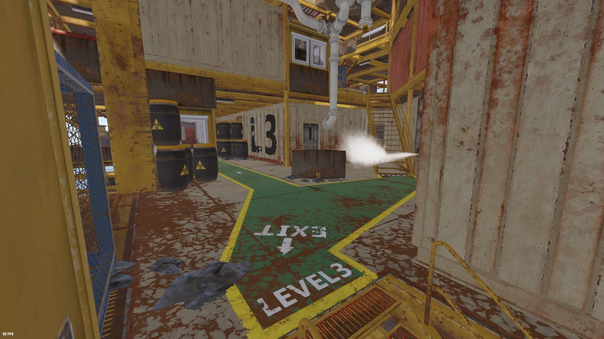L4
L4 is the last sizable level before the top, and it has a lot of utility. The Blue Card room is on this level, as are some of the sneakiest ways onto the top (see L5) and the nastiest peeks onto the levels below. The Blue Card room has 4 Military Crates; simply swipe a Blue Card to get access to them. There is also a fuse room containing some barrels, though it’s typically bugged, preventing entry even if you use a fuse.
L5
L5 is a smaller floor and is the last one before your reach the top. It doesn’t have much of note itself, except for the paths on it that provide direct access to the Crane and several flanking paths, as shown below:
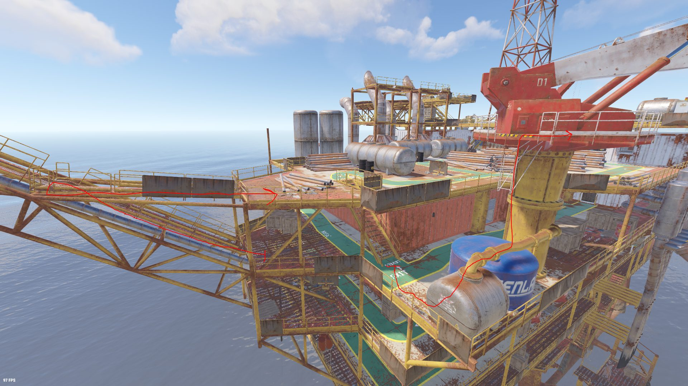 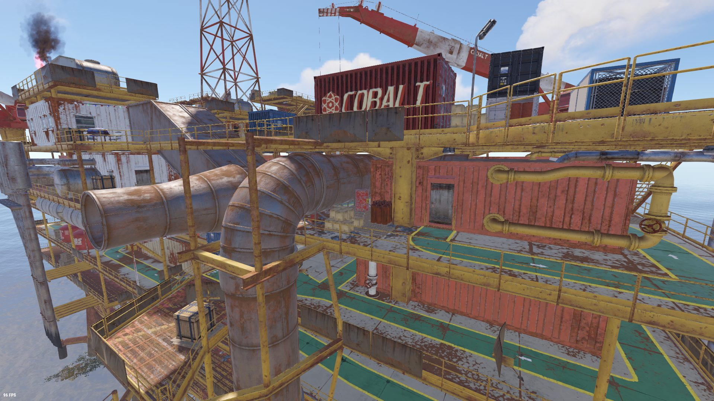Once you are ready to move to L6, you should decide which of the paths you want to take, as shown below:
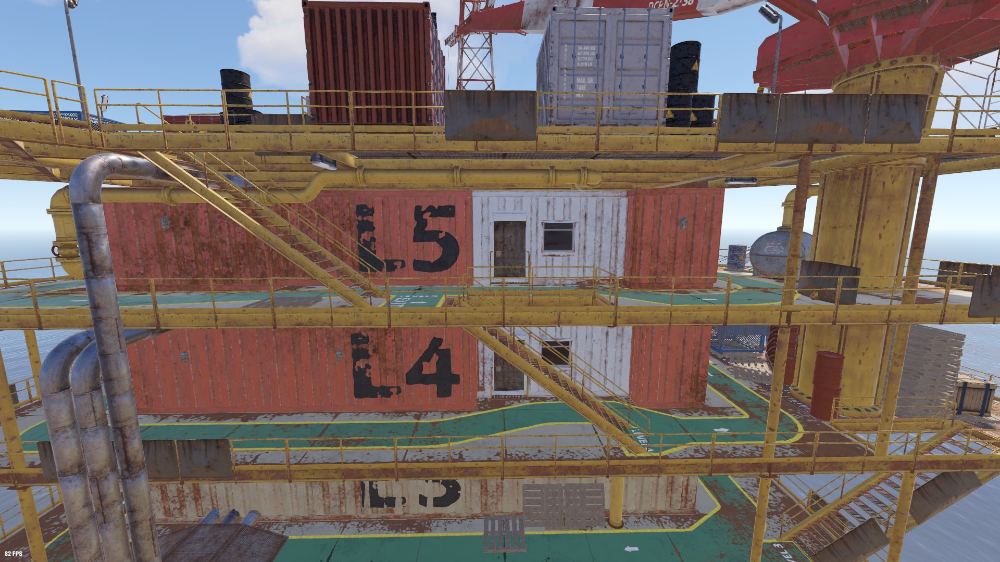 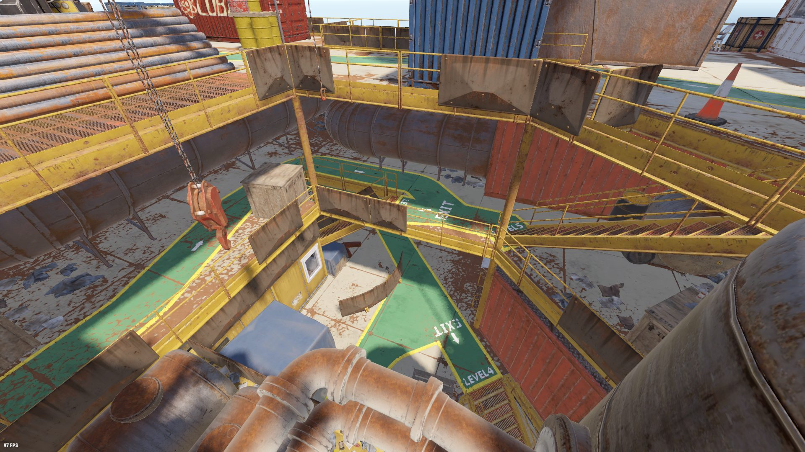 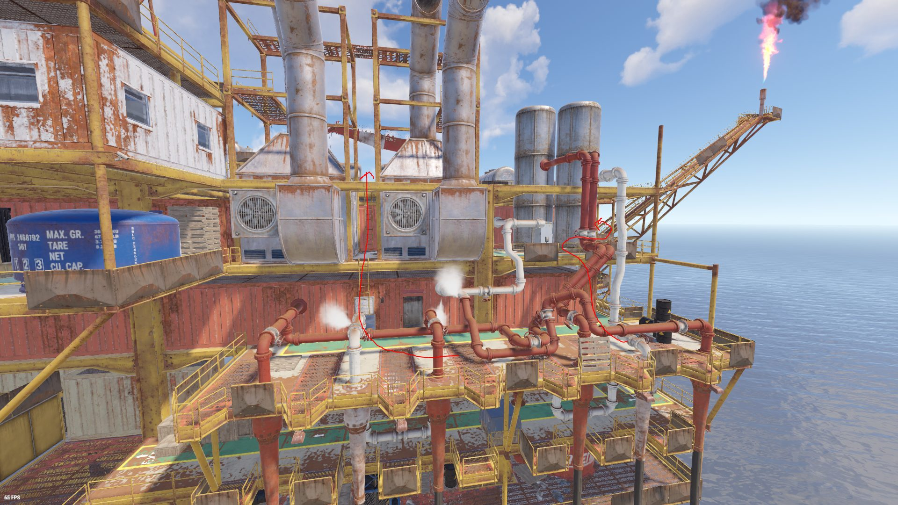L6
L6 is the final level of Large Oil Rig, and the most important. On it, you will find the Red Card room, Diesel spawns, and Research Bench, as well as the Heli Pad (#1), Ball (#2), and Crane (#7) callouts. It will have at least 2 Elite Crates and 5 Military Crates. The diesel spawns are especially interesting, as they can be used at the Giant Excavator monument in order to increase your wealth from this monument even further. Before you can loot it, however, you will need to clear it out. To do this, use the same caution as you should have been before. It is important to remember to heal as you need, and not to rush things (the scientists do not heal, so you are free to take your time). Most of the scientists will pool below Crane One. In order to not get overwhelmed, you should either kite them back to the stairs (just like on L4) or peak over the rail to kill them. After eliminating the scientists, it can be worth looting their bodies in order to fill up on ammo and meds.
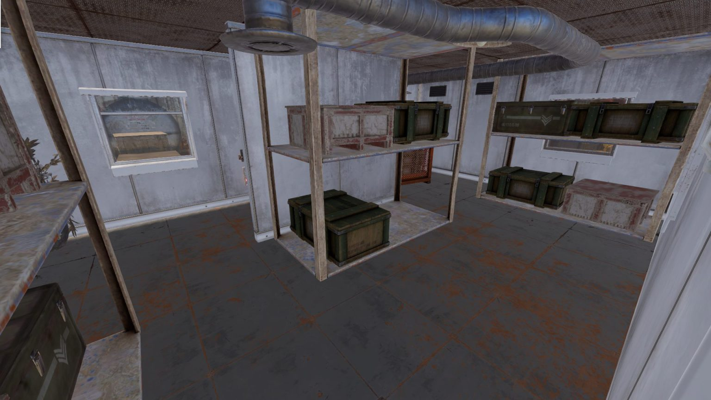Heavy Scientists
The Heavy Scientists are the final challenge on Large Oil Rig. After entering the Red Card room on L6, you can hack the locked Crate in order to call in the heavy scientists, a well-armed and well-armored enemy that can be difficult for an unprepared group. However, they drop excellent loot, and are worth taking on. Some of the best places to take them on are Cranes One and Two (#4 and #7) and from on top of the Red Card Room (#5).
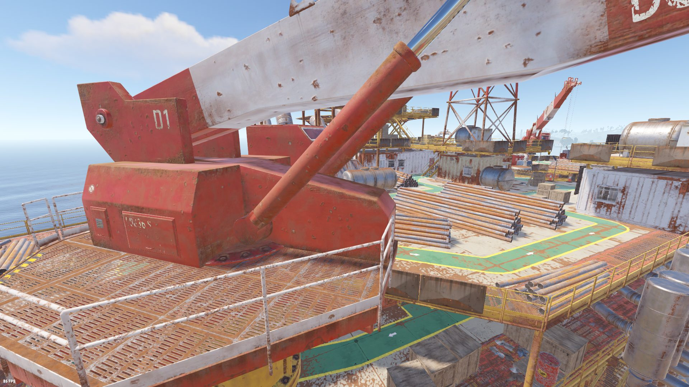 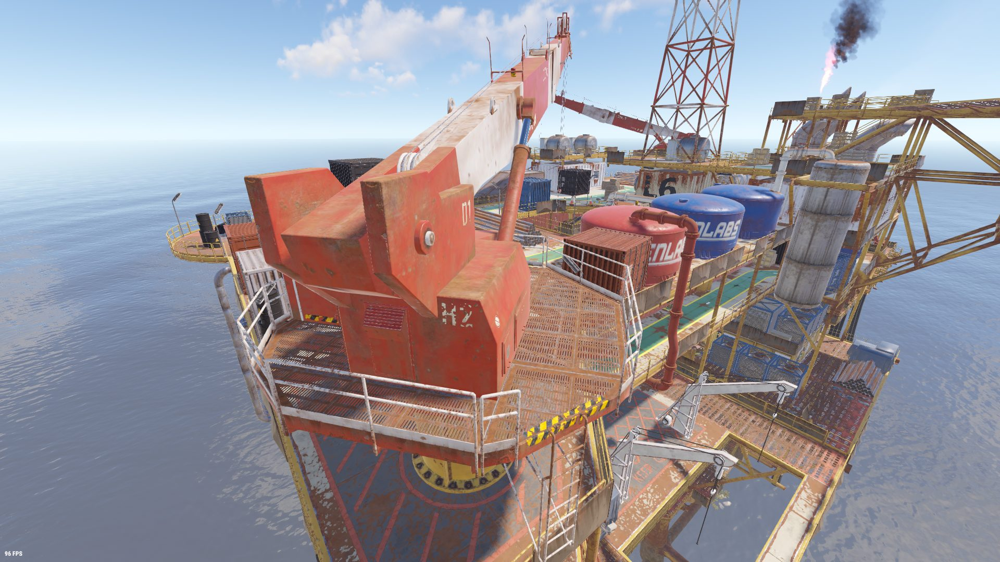 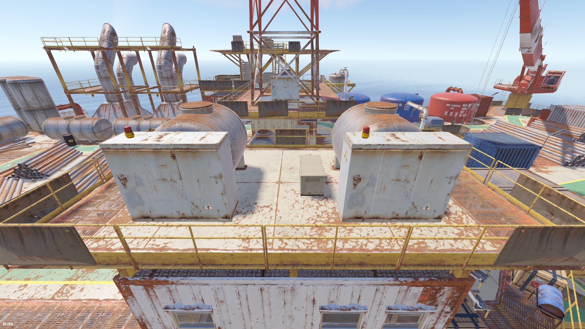Crates and Callouts
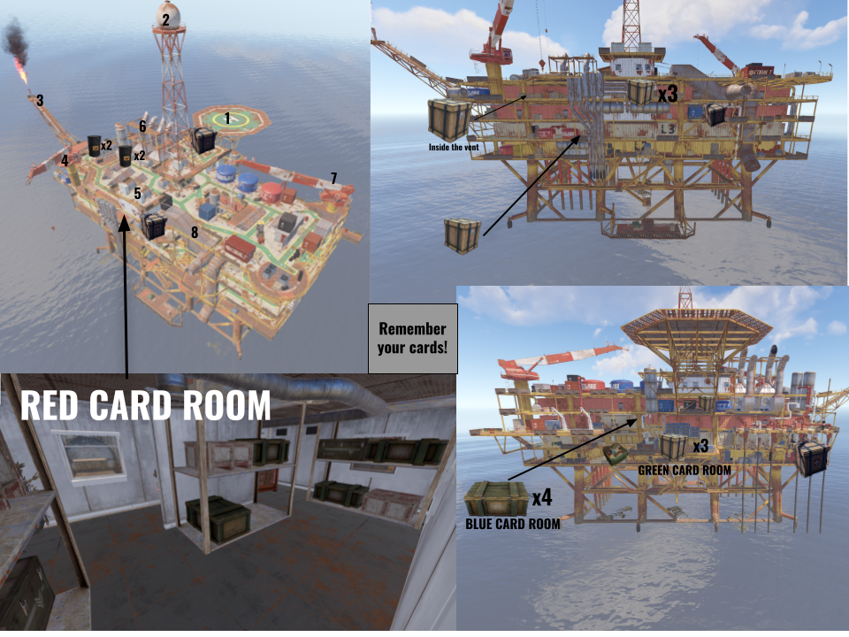The following callouts correspond to the numbers on the image above:
- Helipad
- Ball
- Flame
- Crane 1
- Top of Red Room/Red Room
- Exhaust Pipes
- Crane 2
- Ramp